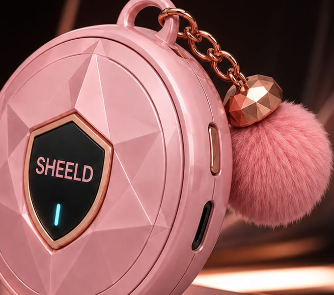
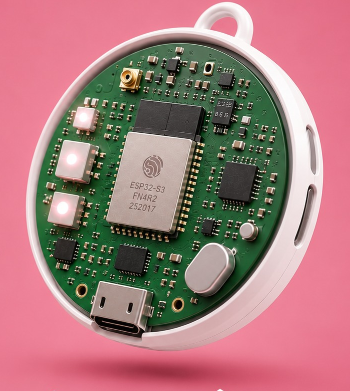
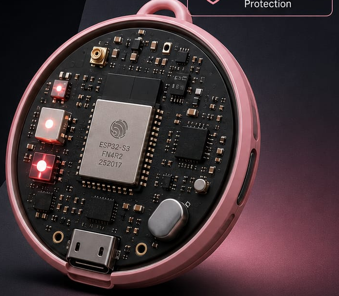

AI-POWERED PRIVACY PROTECTION
She Shine, We Sheild.
A wearable safety companion that senses hidden cameras, RF bugs, and abnormal heat signatures — then alerts you instantly. No cloud. No compromise.

THE PROBLEM
Privacy risk is invisible — until it isn't.
Hidden cameras and covert bugs are cheap, tiny, and everywhere. Conventional safety habits weren't built for threats you can't see.
Hidden Cameras
Pinhole and wireless cameras are cheap, tiny, and easy to conceal in trial rooms, washrooms, and rented stays.
Covert RF Bugs
Listening devices and trackers transmit silently on frequencies invisible to the naked eye — and to your phone.
Manual Checks Fall Short
Flashlight scans and camera-detector apps miss passive lenses and require you to already be suspicious.
It's Everywhere You Travel
Hotels, hostels, fitting rooms, rentals, and offices — the risk follows you into every unfamiliar space.

MEET SHEELD
Your safety, wearable.
A discreet keychain-sized device that senses what your eyes can't. Multiple sensors, one tiny wearable, zero cloud dependency.
-
AI-Powered Detection
On-device AI detects hidden threats and analyzes risk in real time.
-
Instant Alerts
Vibration, sound, and light alerts keep you informed the moment something's off.
-
Long-Lasting Battery
A rechargeable battery built for extended, worry-free everyday carry.
-
Fast USB-C Charging
Quick charging and easy firmware updates for uninterrupted protection.
HOW IT WORKS
Sense. Analyze. Detect. Alert.
Four sensing modalities and an on-device model work together to catch what a glance would miss.
Sense
RF, thermal, EMF, and IR sensors continuously scan the surrounding environment.
Analyze
An on-device TinyML model fuses sensor data and runs Delta Scanning to flag anomalies.
Detect
SHEELD identifies signatures consistent with hidden cameras, transmitters, or bugs.
Alert
You're notified instantly through vibration, sound, and light — no app required.
TECHNOLOGY
Engineered to sense what's hidden.
Every SHEELD is built around five core capabilities that make offline, real-time detection possible in a wearable footprint.
Multi-Sensor Fusion
RF, thermal, EMF, and IR readings are combined for a fuller picture than any single sensor alone.
TinyML On-Device AI
An ESP32-S3 runs inference locally — no internet connection required, ever.
Delta Scanning
SHEELD baselines an environment and flags meaningful changes, cutting false alarms.
Edge / Offline Processing
All analysis happens on the device itself — nothing is sent anywhere.
Low-Power Architecture
Efficient sensing and inference keep battery life practical for daily carry.
Privacy First
Your privacy is at the core of everything we build — by design, not as an afterthought.

WHERE IT PROTECTS YOU
Built for every unfamiliar space.
SHEELD travels with you — into every room you didn't design and can't fully trust.
Hotels
Scan unfamiliar rooms before you settle in.
Trial Rooms
Check fitting rooms in seconds, discreetly.
Hostels
Shared spaces, personal peace of mind.
Offices
Guard confidential meetings from covert bugs.
Public Spaces
Stay aware in restrooms, changing areas, and more.
Travel
One wearable, protection in every new place.
PRODUCT ARCHITECTURE
From raw signal to real-time alert.
ROADMAP
From prototype to scale.
Prototype
First working build validating core sensor fusion and detection logic.
AI Optimization
Refining the TinyML model for accuracy, speed, and power efficiency on-device.
Validation
Real-world testing across environments to reduce false positives and harden detection.
Product Engineering
Industrial design, enclosure, battery, and manufacturing-ready hardware.
Pilot
Limited release to early users for field feedback before wider rollout.
Scale
Manufacturing and distribution to bring SHEELD to everyday carry.
SAFETY, REDEFINED
Safety shouldn't depend on luck.
SHEELD — Detect. Protect. Empower.
Explore SHEELD